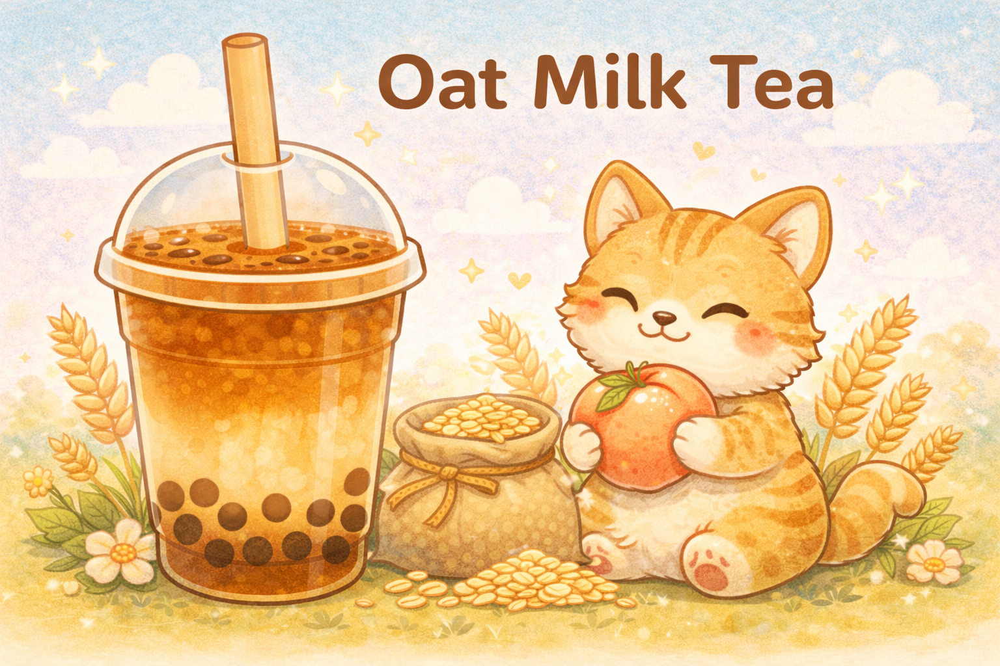

Oat Milk Tea

Description
A smooth, comforting classic with a gentle twist. Oat Milk Tea blends rich black tea with creamy oat milk, lightly sweetened by deep, caramel-like brown sugar syrup. Soft, mellow, and naturally cozy, this drink is perfect for slow sips and peaceful moments.
Ingredients
- 4.2 brown sugar syrup
- 600 ml black tea
- 300 ml oat milk
Steps
- Get a blender
- Get weighted scale
- Measure syrup base
- Measure side syrup
- Add tea that is needed
- Blend the tea
- Put in toppings first inside cup add ice then add tea mixture
- Seal drink
Home